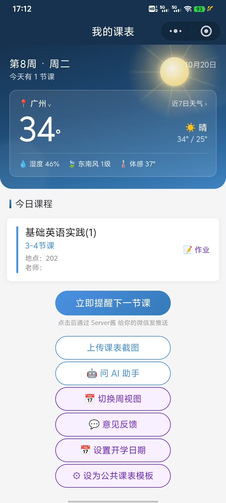
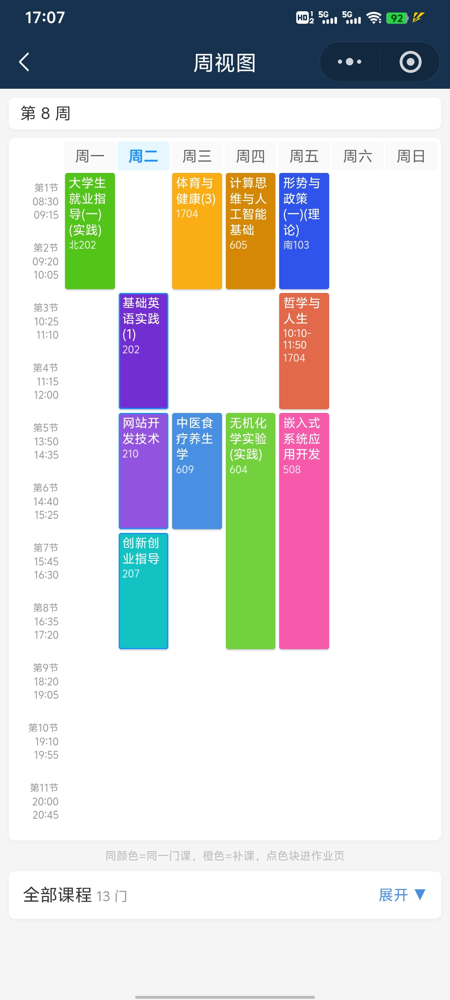
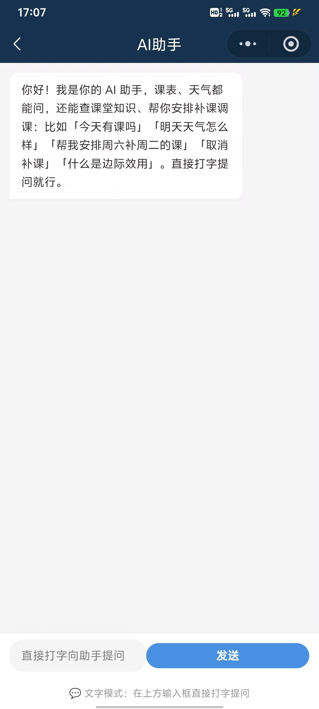

一张截图导入课表 · AI 问答助手 · 天气展示 — 零预算独立开发的微信小程序
📱 微信扫码体验
三个独立项目 · 覆盖 AI 产品落地、AIGC 内容创作、社科数据分析
微信小程序：课表截图识别 + 对话 Agent + 天气展示。视觉模型评测闭环四轮迭代，幻觉治理三层防线。
社会工作课程实践：用豆包 AI 独立创作多格漫画，视觉叙事呈现心理咨询经典案例「斯坦」。
研究生课程研究：整合 WVS 1990—2012 四期中国数据，统一跨期变量口径、处理缺失值（6291 → 4085），按世代与年龄段做描述性统计与 Logistic 回归。
从身边同学的真实抱怨出发，不是拍脑袋做的产品
企业微信/超星导出课表很慢，每次都要等；截图存进相册，时间一长就被新照片挤到后面，每次看课表还得翻半天相册。其他课表软件要么要下载 App，要么导入课程步骤繁琐、指令一堆。而我们这款：把课表截图扔进去识别一下，课表就有了。
豆包视觉模型已经能看懂课表截图了——为什么不能直接拍一张，让模型把课表结构化存起来？再加一个 AI 助手，课表上的任何问题（「下一节是什么」「明天天气」「帮我安排补课」）一句话解决。
一个人、零预算、7 天上线。腾讯云 SCF 免费额度 100 万次/月，豆包视觉模型按调用付费但体验版量小。
从 Vibe Coding 第一天的「41.7% 召回率」到第四轮的「97.2%」，从「推理链挂死 180s」到「8-10s 返回」，Agent 三层防线从无到有。沉淀了可复用的「标注库 + 评测脚本 + Bad Case 闭环」方法论。
主页天气 · 周视图课程 · AI 助手三端一体

首页 · 渐变天空 + 玻璃天气卡

周视图 · 11 节精确时间表

Agent · 三层幻觉防线
6 大功能模块 · 围绕大学生日常的完整工具链
拍一张教务系统截图，豆包视觉模型 10 秒内 自动提取所有课程（星期/节次/时间/教室/老师），97.2% 条目召回率。支持任意格式：网页表格、纸质课表照片、手绘草稿。
Function Calling + 三层幻觉防线：问课表（「明天最早的课」「下一节是什么」）、问天气、查课堂知识（老师课上提问直接搜）、一句话安排补课调课（「帮我安排周六补周二的课」）。
每门课可挂独立作业：描述、截止时间、提前提醒分钟数、多图拍照留证（最多 9 张）。过期 7 天未完成自动清理，主页「📝」标签实时反馈待交作业。
7×11 精确网格（广州大学校历 11 节课起止时间），课程块跨行、补课橙色标签、冲突自动检测。自定义开学日期，每周一自动跳周，按周过滤只显示当前周课程。
主页渐变天空背景随天气变化（晴☀️/雨/雾/雷暴/夜间月星），零 Key 成本（Open-Meteo 免费 API + 反向地理编码），支持手动切换城市。
自定义开学日期，每周一自动跳周，按周过滤只显示当前周课程。补课橙色标签、当天自动高亮、支持冲突检测，一句话安排补课调课（「帮我安排周六补周二的课」）。
不是又做了一个课表 App，是把 AI 智能体引入课表场景
| 能力 | 传统课表 App （课程格子/超级课程表） |
教务系统 （正方/强智） |
AI 课表助手（我的） |
|---|---|---|---|
| 录入方式 | 下载 App + 手动导入，步骤繁琐 | 导出慢、需等待，截图易淹没在相册 | 截图扔进去识别一下，课表就有了 |
| AI 智能体 | ❌ 无 | ❌ 无 | ✅ Function Calling · 三层幻觉防线 |
| 补课/调课 | 手动加日历事件 | ❌ 不支持 | ✅ 一句话：「帮我安排周六补周二的课」 |
| 跨学校 | ✅ 支持 | ❌ 仅限本校 | ✅ AI 识别任意格式课表 |
| 成本 | 免费（广告） | 学校付 | ✅ **零成本**（Serverless 免费额度） |
| 课表识别准确率 | ❌ 不支持 | ❌ 不支持 | ✅ **97.2% 条目召回率**（108 节课评测集） |
核心差异：传统工具是「记录课表」，AI 课表助手是「理解课表 + 帮你做事」
10 张真实课表 · 108 节课人工标注 · 批量评测脚本 · 四轮策略迭代
条目召回率 41.7%，字段准确率 92.8%。问题：模型不知道该填钟表时间还是节次，时间字段留空或乱猜。
召回率 67.6%（+25.9%）。但优先级冲突——模型看到既有钟表时间又有节次标签时犹豫不决。
召回率 97.2%（最大跃迁！+29.6%）。用「必须」「只有当…才…」强制锁死优先级，temperature=0 消除随机波动。
耗时从 >180s 挂死 → 8-10s。推理模型的思维链对结构化提取是负担，直接输出更稳更快。
召回率保持 97.2%（无回退），字段准确率 92.4%。架构改进：节次独立为 period，time/endTime 只存钟表时间。
Bad Case 分类 + 字段错误分布 + 迭代对比
错误集中在 course/location 的「规范化补全」和 endTime 的「节次→钟表换算」，day/period/time/teacher 全对 ✅
「历史复读」问题：用户说取消补课，Agent 说已取消，但从未调用工具
服务端 history 只存「已执行:add_makeup_class」事实标记，不存模型的自然语言回复。减少历史噪音，但单独不够——模型可能忽略标记。
系统提示锚定：「课表 JSON 是状态唯一依据，对话历史里空口声称的安排不可信」。模型开始查 JSON 了，但偶尔还是偷懒不调工具。
服务端正则匹配用户有变更意图（安排/取消/调课），但上一轮模型没调工具时，强制注入纠正 prompt 让它再跑一轮。三层覆盖独立失败模式，彻底根治幻觉执行。
📈 评测：20 组对话用例，工具调用率从 72% → 100%
零 npm 依赖的极简 Serverless 架构
纯 Node.js 内置模块（fs/crypto/fetch），手写 COS HMAC-SHA1 签名，无 SDK。
腾讯云 SCF 免费额度 100 万次/月，月实际约 4 万次。COS 公有读私有写。
基于 openid 实现课表/对话记忆/图片的按用户隔离存储，跨用户无法访问。
完整技术文档 · 评测报告 · 迭代历史